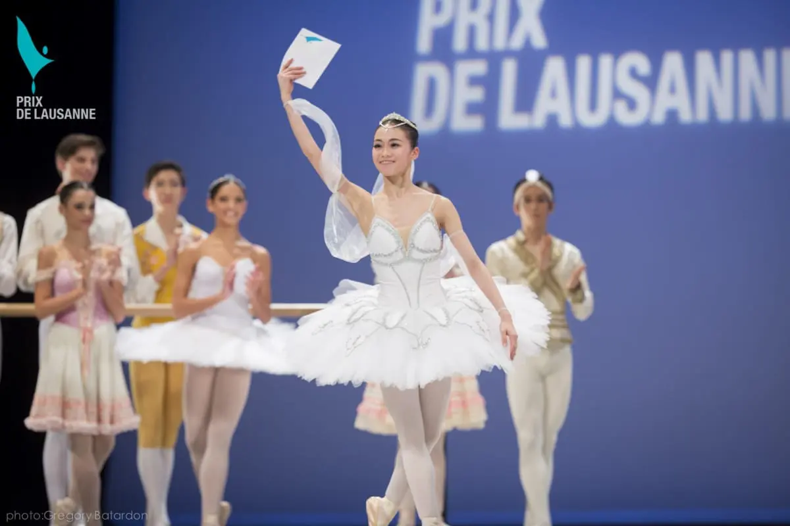
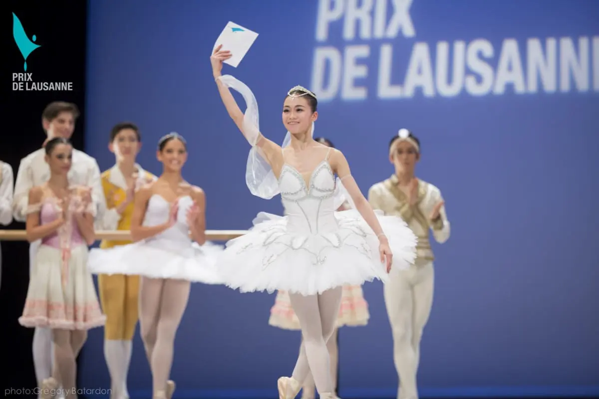
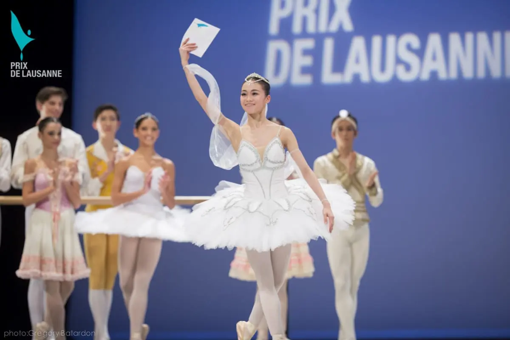
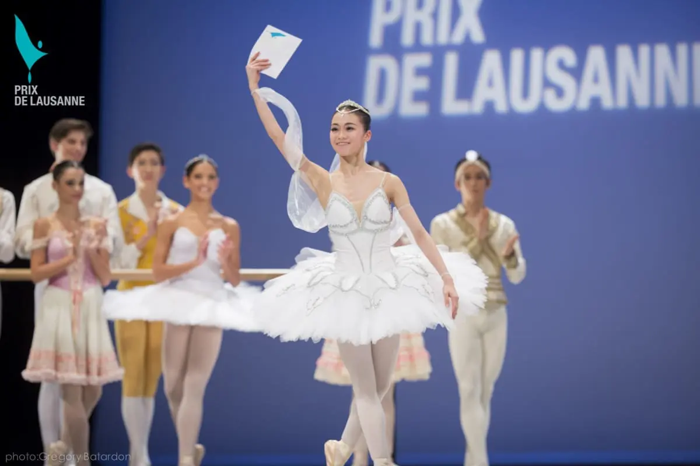

The Tony Awards, established in 1947, are considered the most prestigious honors in American theater. Named after Antoinette Perry, an actress, director, and producer, the awards celebrate excellence in live Broadway theater. Presented by the American Theatre Wing and The Broadway League, the Tonys recognize outstanding performances by actors, directors, designers, and other theatrical professionals. The awards also celebrate the creativity and craftsmanship behind the year's best Broadway productions, including plays and musicals.
Named after the renowned British actor Sir Laurence Olivier, the Olivier Awards were established in 1976 and are presented annually by the Society of London Theatre. These awards celebrate excellence in professional theater in London, England. The Olivier Awards honor achievements in various categories, including acting, directing, writing, design, and musical theater. They recognize the outstanding talent and contributions of individuals and productions that have graced the London stage.
While the Emmy Awards primarily recognize excellence in the television industry, they also include categories dedicated to celebrating achievements in comedy. These awards acknowledge outstanding comedic performances, writing, and production in both comedy series and variety programs. The Emmy Awards are presented by the Academy of Television Arts & Sciences, with winners selected through a voting process by industry peers.
The MTV Video Music Awards (VMAs) were established in 1984 and celebrate achievements in the music video industry. While the VMAs cover various aspects of music entertainment, they also have categories that honor humorous music videos and comedic performances by artists. The VMAs are known for their vibrant and entertaining ceremonies, often featuring memorable performances and pop culture moments.
Established in 1959 by the Recording Academy, the Grammy Awards are among the most prestigious music awards globally. They recognize outstanding achievements in the music industry across various genres, including pop, rock, hip-hop, classical, and more. The Grammy Awards celebrate the best recordings, performances, songwriting, and music production of the year. Winners are selected through a rigorous voting process involving music professionals.
The Country Music Awards (CMA Awards) were established in 1967 and celebrate achievements in the country music genre. Presented by the Country Music Association, these awards recognize exceptional talent in country music, including performances by artists, songwriters, musicians, and music videos. The CMA Awards highlight the diversity and creativity within the country music community.
The Prix de Lausanne is an internationally renowned ballet competition that takes place annually in Lausanne, Switzerland. It was established in 1973 and is open to young ballet dancers from around the world, typically aged between 15 and 18. The competition aims to discover and support exceptionally talented young dancers by offering scholarships to prestigious ballet schools and companies. Dancers perform classical and contemporary variations in front of a panel of judges, who then award scholarships and apprenticeships to the most promising participants.
The Benois de la Danse is one of the most prestigious awards in the world of ballet. Named after the famous Russian ballet dancer Vaslav Nijinsky's character in "Le Spectre de la Rose," the award was established in 1991 in Moscow, Russia. It recognizes outstanding achievements in choreography, dancing, and ballet performances worldwide. Each year, a panel of international dance experts selects nominees and winners across several categories, celebrating the artistry and creativity of ballet dancers and choreographers.